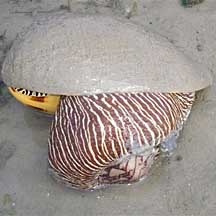
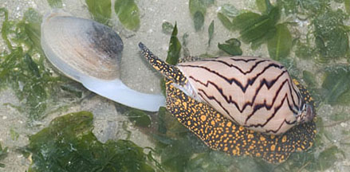
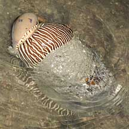
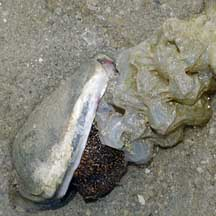
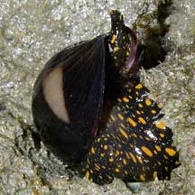
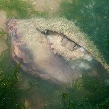
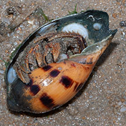

|
|
| shelled snails text index | photo index |
| Phylum Mollusca > Class Gastropoda |
| Volutes Family Volutidae updated Sep 2020
Although some are highly prized for their large, glossy, patterned shells, living volutes are even more beautiful. Their bodies are boldly marked with colourful stripes or spots. Where seen? The Noble volute is regularly sighted on some of our Northern and Southern shores, especially at night when they are more active. The Baler shell is also sometimes seen on our Northern shores. Features: To about 20cm. In some, the shells are large, heavy and glossy, often with beautiful patterns. As an adaptation to burrowing in sand, seeking buried prey, the foot is large and muscular, and the siphon long, the tip sticking out of the sand while the snail is buried. What do they eat? All members of the Family Volutidae are carnivorous. Their prey include molluscs and echinoderms. A volute seeks out buried bivalves with its siphon and encloses the prey in its huge foot then waits. When the exhausted bivalve opens up to breathe (which can take several days!), the volute sticks its proboscis in and rasps the flesh of its prey with its radula. Volutes may hunt their prey from the surface, but often burrow to eat their prey under the sand. |
 Baler snail eating a Noble volute! Chek Jawa, Jun 10 Photo shared by Toh Chay Hoon on her blog. |
 Noble volute hunting down a Big brown mactra clam that eventually escaped. Pulau Semakau, Mar 08 |
| Volute babies: In members of the Famliy Volutidae, the male fertilises the female internally. There is no free-swimming larval stage and crawling juvenile snails emerge from the egg. As a result, volutes have a restricted range and local populations can be wiped out by over-collection. Noble volutes lay translucent egg capsules that contain many eggs. But only one or a few develop, the survivor having eaten the others. The eggs hatch and undergo metamorphosis within the egg capsules, emerging as tiny crawling snails. |
 A smaller Baler volute riding on the back of a bigger one. Prelude to mating? Beting Bronok, Jun 10 |
 Noble volute laying egg capsules Pulau Semakau, Mar 07 |
 Baby Noble volute! Pulau Semakau, Mar 08 Photo shared by Toh Chay Hoon on her flickr. |
| Role in the habitat: Even after it dies, the snails shell continues to provide shelter! Many of the Noble volute shells contain a hermit crab instead of the living snail. The hermit crabs need the shell more than we do so we should not collect these shells even if they are empty. Sometimes, octopuses are seen sheltering in the empty shells too. |
 Octopus hiding inside an empty Noble volute shell. Changi, Jun 13 |
 Hermit crab and Slipper snails living in an empty Baler volute shell. Pasir Ris, May 09 |
| Human uses: Called 'kilah'
in Malay, the Noble volute is edible. It is also 'often collected for
its attractive shell. The Baler shell was also eaten and its empty
shell used by fishermen to scoop water out of their boats, as well
as to scoop sugar, salt and flour in markets. Status and threats: The Noble volute is listed as 'Vulnerable' and Baler shell as 'Endangered' on the Red List of threatened animals of Singapore due to habitat loss. The Noble volute was previously abundant in Singapore but is now considered vulnerable due to habitat degradation and overcollection for food and for its attractive shell. |
| Volutes on Singapore shores |
| Family
Volutidae recorded for Singapore from Tan Siong Kiat and Henrietta P. M. Woo, 2010 Preliminary Checklist of The Molluscs of Singapore. in red are those listed among the threatened animals of Singapore from Davison, G.W. H. and P. K. L. Ng and Ho Hua Chew, 2008. The Singapore Red Data Book: Threatened plants and animals of Singapore.
|
Links
References
|